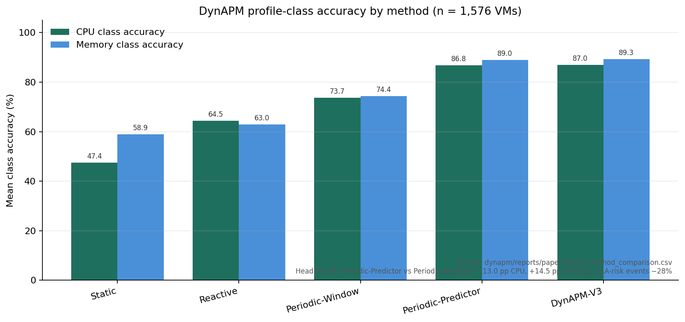

DynAPM — Predictive Application Profile Maintenance
Drift-aware profile maintenance with predictor-grounded forecasting on production VM traces

Overview
DynAPM (Drift-Aware Profile Maintenance with Predictor-Grounded Forecasting) is a research machine-learning system for keeping CPU and memory application resource profiles aligned with changing cloud-edge workload behaviour.
Rather than treating forecasting as an end in itself, DynAPM uses per-VM predictors, residual streams, and online drift detection to decide when profile classes and predicted p95 demand should be refreshed. The approach was evaluated on GWA-T-13 Materna production VM traces covering 1,576 virtual machines. This page describes the reproducible research artifact—not a claim of live commercial DynAPM deployment.
The Problem
Static application resource profiles become inaccurate as workload behaviour changes. Updating them too slowly increases SLA risk through under-provisioning; updating them blindly or excessively wastes refresh activity without guaranteeing better profile fidelity.
DynAPM asks whether predictor-grounded forecasting combined with drift-aware monitoring can make profile maintenance more responsive to workload change than matched observation-window baselines—while measuring both profile-class accuracy and provisioning-oriented SLA-risk outcomes.
The Approach
The implemented experimental pipeline follows the DynAPM artifact design:
Materna CPU/memory traces
Bootstrap windows and features
Per-VM Random Forest predictors
Observed − predicted streams
Online ADWIN on residuals
Class + p95 maintenance
Accuracy and SLA-risk metrics
This is the verified experimental/engineering pipeline from the DynAPM reproduction package—not a live serving architecture diagram.
End-to-End ML Pipeline
The public dynapm branch packages a full corpus workflow:
- Bootstrap characterisation and per-VM thresholds
- Full-corpus predictor residual generation
- Forward-looking ground-truth snapshots (class + p95)
- Class-level evaluation across 1,576 VMs and multiple maintenance policies
- Provisioning simulation for SLA-risk / under-provisioning outcomes
- Paper packaging that regenerates tables and figures from corpus summaries
My Contribution
I designed and implemented the DynAPM research and engineering artifact as a reproducible software pipeline:
- Designed and implemented the reproducible DynAPM evaluation pipeline
- Built data preparation, feature construction, and corpus-scale experiment drivers
- Implemented per-VM forecasting and residual-stream generation
- Implemented residual-based online drift detection and profile-update policies
- Implemented profile-class and provisioning-oriented evaluation
- Automated multi-method corpus experiments and metric aggregation
- Produced structured results, paper tables/figures, and test coverage for core components
Forecasting & Drift Detection
Forecasting
Per-VM Random Forest predictors (scikit-learn) forecast CPU and memory signals from engineered features. Predictions feed residual streams and predictor-lookahead windows used to refresh profile classes and predicted p95 demand.
Drift detection
Online detectors from river (primarily ADWIN; Page-Hinkley also implemented) monitor residual streams (y_true − y_pred). Drift events can trigger additional profile refreshes beyond the periodic predictor schedule (DynAPM-V3).
Drift here means change detection on forecast residual behaviour used to drive profile maintenance—not a generic anomaly dashboard.
Evaluation Methodology
- Dataset: GWA-T-13 Materna production VM traces
- Scale: 1,576 kept VMs in the full-corpus evaluation
- Signals: CPU and memory profile classes, plus predicted p95 fields
- Comparators: Static, Reactive, Periodic-Window, Periodic-Predictor, DynAPM-V3 (and related variants)
- Primary metrics: mean profile-class accuracy with confidence intervals; pairwise deltas with significance testing
- Operational proxy: under-provisioning / SLA-risk event rates from provisioning evaluation
- Reproducibility: configuration-driven scripts, checked-in corpus summaries, regenerable paper tables/figures, and automated tests
Results
Verified headline results from the DynAPM study (predictor-grounded maintenance versus the matched observation-window baseline):
Values are reported as percentage-point lifts and a relative SLA-risk reduction, matching the manuscript and paper tables. They are not converted into informal “% more accurate” claims.
Engineering & Reproducibility
Modular pipeline
Separated core modules for predictors, drift, update engine, policies, evaluation runners, and paper packaging.
Experiment automation
Task scripts drive bootstrap → predictors → ground truth → full-corpus eval → provisioning → paper outputs.
Structured artifacts
Per-VM JSON results, parquet summaries, residual samples, and regenerable CSV/PNG paper tables and figures.
Tests & repeatability
Pytest coverage for core components; fixed seeds and documented reproduction commands in the artifact README.
Technologies
Specific libraries listed only where used in the DynAPM artifact:
Outcome / What the Results Mean
On the evaluated Materna production VM corpus, DynAPM provides evidence that combining predictor-grounded forecasting with drift-aware profile maintenance can improve CPU and memory profile-class accuracy and reduce SLA-risk events relative to a matched observation-window baseline.
These results characterise the research evaluation. They do not claim that DynAPM is a deployed autonomous production control plane, nor that the same lifts are guaranteed on every workload.